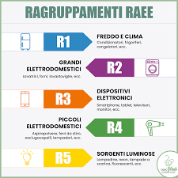

Cosa Sono i RAEE
I RAEE comprendono tutti i dispositivi elettrici ed elettronici che sono stati dismessi. Questo include elettrodomestici, dispositivi di telecomunicazione, apparecchiature informatiche e altro ancora. I RAEE sono suddivisi in cinque categorie per una gestione più efficace:
- R1=Freddo e clima (es. frigoriferi, condizionatori)
- R2=Grandi bianchi (es. lavatrici, lavastovigli)
- R3=Tv e monitor
- R4=Piccoli elettrodomestici(es. Telefoni, radio)
- R5=Sorgenti luminose (es. lampade fluorescenti)
Secondo il Regolamento Europeo, i RAEE devono essere trattati e smaltiti in modo da ridurre al minimo i rischi per l'ambiente e la salute umana.
Approfondiamo le categorie:
R1: Freddo e clima
La categoria R1 “freddo e clima” è costituita da frigoriferi, congelatori, apparecchi che distribuiscono automaticamente prodotti freddi, condizionatori, deumidificatori, pompe di calore, radiatori a olio, altre apparecchiature per lo scambio di temperatura (con fluidi diversi dall’acqua), asciugatrici con pompa di calore.
Nel 2020 nel nostro territorio sono stati raccolti 200.250 kg di RAEE della categoria R1, in media 1,26 kg pro capite all’anno. Questo dato è in calo rispetto a quello del 2019 (1,50 kg/ab/anno) e conferma l’andamento della raccolta dei RAEE del freddo e del clima, che evidenzia un calo di quasi 460 tonnellate, comune a tutte le province e pari al -6,2% rispetto alla raccolta del 2019, per un totale di 7.333 tonnellate.
R2: Grandi bianchi
I 5 raggruppamenti dei Rifiuti da Apparecchiature Elettriche ed Elettroniche corrispondono ai 5 contenitori in cui si collocano i RAEE all’isola ecologica. La categoria R2 “grandi bianchi” è costituita da lavatrici, lavastoviglie, apparecchi di cottura, stufe elettriche, piastre riscaldanti elettriche. In sostanza possiamo vedere che sono impanti ad incastro, e dato che sono composti da più materiali, vengono smontati, per poi riciclare singolarmente ogni materiale, ad esempio in una lavatrice possiamo trovare anche 9kg di plastica.
R3: Tv e monitor
La categoria R3 “TV e monitor” è costituita da televisori, schermi, cornici digitali LCD, monitor, laptop e notebook.
Nel 2020 nel nostro territorio sono stati raccolti 158.150 kg di RAEE della categoria R3 (televisori, schermi, cornici digitali LCD, monitor, laptop e notebook), in media 0,99 kg pro capite all’anno. Questo dato è in leggero calo rispetto a quello del 2019 (quando erano stati raccolti 160.741 kg in totale per 1,01 pro capite all’anno).I dati complessivi della regione Piemonte dimostrano una crescita della raccolta di questa categoria con +4%
R4: Piccoli elettrodomestici
I 5 raggruppamenti dei Rifiuti da Apparecchiature Elettriche ed Elettroniche corrispondono ai 5 contenitori in cui si collocano i RAEE all’isola ecologica. La categoria R4 “IT e Consumer electronics, apparecchi di illuminazione, PED e altro” è costituita ad esempio da computer e apparecchi informatici, telefoni, apparecchi di illuminazione, pannelli fotovoltaici. Nel 2020 nel nostro territorio sono stati raccolti 545.080 kg di RAEE della categoria R2 (grandi bianchi) ed R4 (IT e Consumer electronics, apparecchi di illuminazione, PED), in media 3,43 kg pro capite all’anno. Questo dato è in calo rispetto a quello del 2019 (quando erano stati raccolti 610.598 kg in totale per 3,84 pro capite all’anno), ed è in linea con i dati in calo per R2 e R4 della provincia di Cuneo, ma in controtendenza rispetto ai dati complessivi della regione Piemonte, che dimostrano una netta crescita sia della raccolta dei grandi bianchi (R2) che dei piccoli elettrodomestici ed elettronica di consumo (R4).
R5: Sorgenti luminose
I 5 raggruppamenti dei Rifiuti da Apparecchiature Elettriche ed Elettroniche corrispondono ai 5 contenitori in cui si collocano i RAEE all’isola ecologica. La categoria R5 "sorgenti luminose" è costituita ad esempio da lampadine a basso consumo, lampade e led, lampade a neon, lampade fluorescenti, ecc. Un esempio: come si recupera la lampadina a fluorescenza? Le diverse componenti di questo oggetto possono essere smontate e recuperate in appositi impianti. A seconda del tipo, nella lampadina si puó trovare un 84% di vetro che viene lavato, triturato e trova nuova applicazione in materiali per l’edilizia o nei processi di vetrificazione delle piastrelle. Il mercurio, presente circa all’8%, viene recuperato per distillazione e impiegato a livello industriale. Le polveri fluorescenti contenute all’interno della lampadina vengono separate e aspirate dopo il processo di frantumazione. Per saperne di più sul riciclo delle sorgenti luminose e della categoria R5 è possibile consultare il sito cdcraee.it e raccoltaraee.it I dati del 2020 per la categoria R5 Nel 2020 nel nostro territorio sono stati raccolti 6.700 kg di RAEE della categoria R5, in media 0,04 kg pro capite all’anno. Questo dato è coerente con la raccolta del 2019). A livello regionale, nel 2020, la raccolta di sorgenti luminose ha invece fatto segnare un -6% ed è in linea con i dati in calo a livello nazionale (-5,76%).